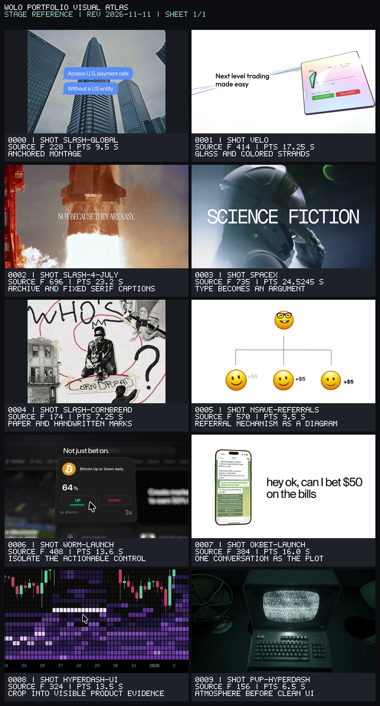

Stage reference · revision 2026-11-11
Contact sheet visually inspected on 11 November 2026. Labels on PNGs use uppercase bitmap type; original strings and exact mapping follow.

| Index / sheet / cell | Shot | Clock | Label | Source |
|---|---|---|---|---|
| 0 / 0 / 0 | slash-global | source frame 228; PTS 9.5 s | Anchored montage | /Users/abhishekmankotia/Downloads/MovieMaker/research/wolo-study/atlas-stills/slash-global.jpg |
| 1 / 0 / 1 | velo | source frame 414; PTS 17.25 s | Glass and colored strands | /Users/abhishekmankotia/Downloads/MovieMaker/research/wolo-study/atlas-stills/velo.jpg |
| 2 / 0 / 2 | slash-4-july | source frame 696; PTS 23.2 s | Archive and fixed serif captions | /Users/abhishekmankotia/Downloads/MovieMaker/research/wolo-study/atlas-stills/slash-4-july.jpg |
| 3 / 0 / 3 | spacex | source frame 735; PTS 24.5245 s | Type becomes an argument | /Users/abhishekmankotia/Downloads/MovieMaker/research/wolo-study/atlas-stills/spacex.jpg |
| 4 / 0 / 4 | slash-cornbread | source frame 174; PTS 7.25 s | Paper and handwritten marks | /Users/abhishekmankotia/Downloads/MovieMaker/research/wolo-study/atlas-stills/slash-cornbread.jpg |
| 5 / 0 / 5 | nsave-referrals | source frame 570; PTS 9.5 s | Referral mechanism as a diagram | /Users/abhishekmankotia/Downloads/MovieMaker/research/wolo-study/atlas-stills/nsave-referrals.jpg |
| 6 / 0 / 6 | worm-launch | source frame 408; PTS 13.6 s | Isolate the actionable control | /Users/abhishekmankotia/Downloads/MovieMaker/research/wolo-study/atlas-stills/worm-launch.jpg |
| 7 / 0 / 7 | okbet-launch | source frame 384; PTS 16.0 s | One conversation as the plot | /Users/abhishekmankotia/Downloads/MovieMaker/research/wolo-study/atlas-stills/okbet-launch.jpg |
| 8 / 0 / 8 | hyperdash-ui | source frame 324; PTS 13.5 s | Crop into visible product evidence | /Users/abhishekmankotia/Downloads/MovieMaker/research/wolo-study/atlas-stills/hyperdash-ui.jpg |
| 9 / 0 / 9 | pvp-hyperdash | source frame 156; PTS 6.5 s | Atmosphere before clean UI | /Users/abhishekmankotia/Downloads/MovieMaker/research/wolo-study/atlas-stills/pvp-hyperdash.jpg |